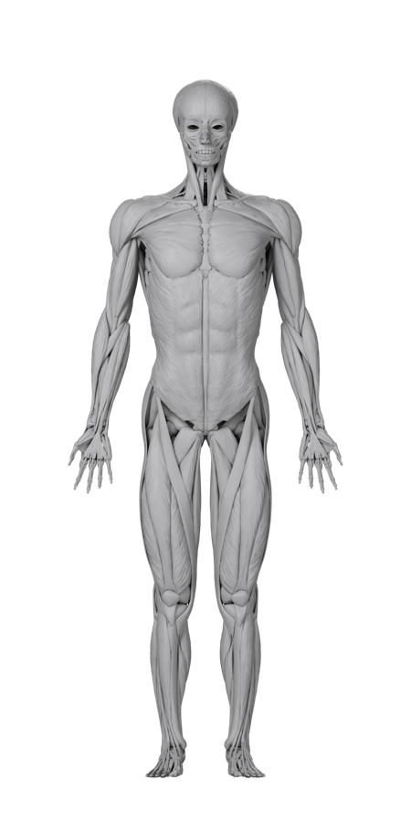
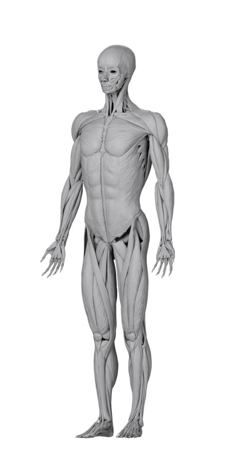
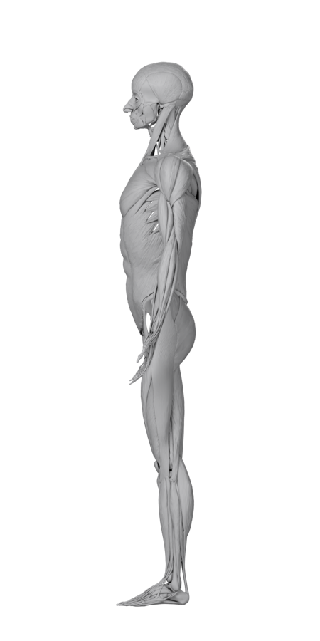
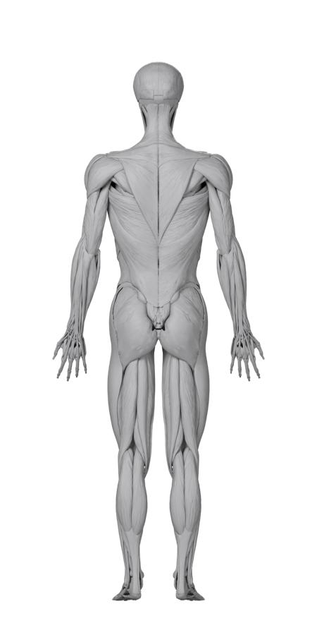

Support
MuscleEcho is a workout log for iPhone and iPad that shows your training on an anatomical body chart.
Contact
kiyonda69@icloud.com (English or Japanese)
Please include the app version, your device and its iOS / iPadOS version, and the steps that lead to the problem. Never send your workout records or backup files unless we ask for a specific problem.
Frequently asked questions
What do the colors on the body mean?
Choose what to show above the body chart:
- Growth — growing (green), regaining a previous peak (gold), maintaining (teal), resting before it starts to shrink (gray), shrinking (blue). Muscles you haven’t trained yet are not colored.
- Recovery — just trained (red), recovering (orange), almost recovered (yellow), recovered (green), for muscles trained in the last 3 days.
- This week — weekly effective sets: below the amount that keeps a muscle’s size (blue), enough to keep it (yellow), enough to grow (orange), plenty — 12 or more (red).
- Today — muscles you trained today, darker for more sets.
Tap a muscle on the body or in the list to see its numbers.
How do I turn the body around?
Drag sideways on the body to turn it in 10° steps, or use the Front and Back buttons.
Are the sizes and recovery real measurements?
No. They are estimates from a model based on published research on muscle growth, detraining and muscle memory, calculated from what you log. Recovery is a rule of thumb (about 24 to 72 hours depending on how many sets you did). The app is not a medical device and does not give medical advice.
How does AI Insights work? (Pro)
Turn it on in Settings › AI Insights. Nothing is sent automatically: when you tap “AI Insights” (on the home screen, at the end of your log, or on the Live Activity), MuscleEcho sends a summary of your recent training to Claude, an AI by Anthropic, through MuscleEcho’s relay server, and shows the analysis a few seconds later. You can ask up to three times a day, after at least three new sets since the last analysis; analyses are saved on your device. Before you turn it on, the app shows exactly what is sent: your workouts from the last 14 days, the body values and training context you entered (goal, equipment, available time, things to avoid) and the app’s muscle estimates. Heart rate, calories, weight and body fat from Apple Health are sent only if you turn on a separate switch (off by default). Turn either off at any time in the same place. See the Privacy Policy.
The analysis is written by AI from your logs. It may be wrong and is not medical advice; stop and see a professional if you feel pain or are unsure.
What is free and what is Pro?
The body chart, logging, the muscle model and the basic friends features are free. Pro adds detailed per-muscle analysis and history graphs, programs and unlimited templates, the Apple Watch app and widgets, and AI Insights. Pro is available as a monthly or annual subscription (the annual one with a free trial for new subscribers).
How do I manage or cancel my subscription?
Subscriptions are handled by Apple. On your iPhone or iPad, open Settings › [your name] › Subscriptions, or the App Store › your account picture › Subscriptions. Cancel at least 24 hours before the end of the current period to avoid the next renewal. For a refund, use Apple’s “Report a Problem” (reportaproblem.apple.com). To restore Pro on a new device, use Restore Purchases in the app.
Body illustrations
The anatomical body illustrations in the app are rendered from the Z-Anatomy 3D atlas: 36 views around the body in 10° steps, with a region map for each view.




- Download all 36 views and the region maps: muscleecho-illustrations.zip (PNG, about 19 MB).
- License: the illustrations are adapted from Z-Anatomy and are available under the Creative Commons Attribution-ShareAlike 4.0 International License (CC BY-SA 4.0). If you share them or something made from them, give the attribution below and use the same license.
- Attribution: “Z-Anatomy — The libre 3D atlas of anatomy”, CC BY-SA 4.0 (z-anatomy.com); BodyParts3D, © The Database Center for Life Science, CC BY-SA 2.1 Japan (dbarchive.biosciencedbc.jp). Rendered by Kiyoaki Segawa, 2026.
Data sources
- Exercise energy: MET values from the 2024 Adult Compendium of Physical Activities (Herrmann et al., 2024).
- Muscle growth, detraining and muscle memory: modeled from published training studies.
Trademarks
Apple, Apple Watch, iCloud, iPad, iPhone, Game Center and App Store are trademarks of Apple Inc., registered in the U.S. and other countries and regions. Claude is a trademark of Anthropic, PBC.